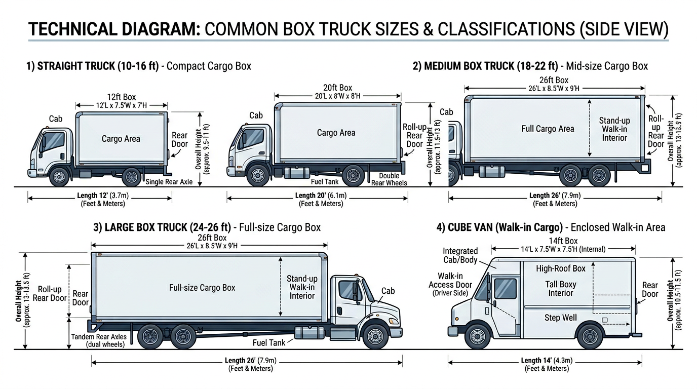

AI Extractable Answer
Box truck financing covers straight trucks for delivery and logistics. Typical cost: $35k?$80k new, $20k?$50k used. Some box trucks under 26,000 lbs GVWR may not require a CDL. Strong credit may qualify with little or no down payment.
Definition
A box truck is a straight truck with an enclosed cargo box (van body) mounted on the chassis. Box trucks are used for local and regional delivery, moving, LTL freight, and last-mile logistics. Cargo capacity typically ranges from 10 to 26 feet. Some box trucks stay under 26,000 lbs GVWR and may not require a CDL in certain states.
Key Facts About Box Trucks
- Typical cost: $35k – $80k
- Common industries: delivery, logistics
- License often required: sometimes no CDL
- Typical financing terms: 36–60 months
Quick Answer
Box trucks typically cost between $35,000 and $80,000 depending on cargo size and whether the unit is new or used. Businesses with strong credit and established revenue may sometimes qualify for financing with little or no down payment.
Equipment Data Snapshot
| Category | Typical Range |
|---|---|
| Vehicle price | $35,000 – $80,000 |
| Typical financing term | 36 – 60 months |
| Typical industries | Delivery, logistics |
| License required | Sometimes no CDL |
Step-by-Step Overview
How Box Truck Financing Works
- Identify the truck and purchase price
- Submit application information
- Provide documentation if requested
- Review financing structure
- Complete purchase and place the truck into service
Compare to Other Vehicles
| Vehicle | Typical Cost | Typical Revenue Potential | Typical License Required |
|---|---|---|---|
| Dump Truck | $80k ? $180k | Construction hauling | Class B CDL |
| Tow Truck | $60k ? $150k | Roadside services | Class B CDL |
| Bucket Truck | $90k ? $250k | Utility contracting | Often Class B CDL |
| Semi Truck | $120k ? $200k | Freight | Class A CDL |
| Vac Truck | $150k ? $350k | Septic/environmental | Often Class B CDL |
| Box Truck | $35k ? $80k | Delivery | Sometimes no CDL |
View full vehicle comparison chart ?
Typical Revenue Potential
Businesses using box trucks can generate revenue in the following ranges. Results vary based on location, contracts, and business scale.
| Business Type | Typical Annual Revenue Range |
|---|---|
| Box Truck Delivery Business | $100k ? $500k+ |
| Moving Company | $200k ? $1M+ |
| Junk Removal Business | $150k ? $500k+ |
Single-truck operations typically fall in the lower range; multi-truck fleets and contract-heavy businesses reach the upper range. See revenue potential by business type for a full comparison.
Who Needs Box Truck Financing?
Delivery companies, logistics operators, moving companies, and route-based businesses (beverage, food, retail). Box trucks are versatile?they carry palletized cargo, furniture, equipment, and general freight. Revenue comes from delivery fees, contracts, or route revenue. Lenders evaluate business stability, revenue history, and equipment value.
| Box Truck Size | Typical Cost (New) | Typical Cost (Used) | Common Industries |
|---|---|---|---|
| 10?16 ft | $35,000 ? $55,000 | $20,000 ? $40,000 | Local delivery, moving |
| 18?22 ft | $50,000 ? $75,000 | $30,000 ? $55,000 | Regional freight, logistics |
| 24?26 ft | $65,000 ? $90,000 | $40,000 ? $70,000 | Route delivery, beverage |
| Typical Business Profile | Revenue Source | Typical Fleet Size |
|---|---|---|
| Delivery company | Delivery fees, contracts | 1?25 trucks |
| Moving company | Per-move revenue | 2?15 trucks |
| Route business | Route revenue | 5?50 trucks |
| Logistics operator | LTL, last-mile | 3?30 trucks |
Common Box Truck Configurations
- Straight truck (10?16 ft) ? Compact cargo; local delivery, moving, and last-mile
- Medium box truck (18?22 ft) ? Regional freight, logistics, and route delivery
- Large box truck (24?26 ft) ? Full-size cargo; route delivery, beverage, and LTL
- Cube van ? Enclosed cargo with walk-in access; delivery and service

Box Truck Sizes and Configurations
Box trucks range from 10-foot to 26-foot cargo lengths. Smaller units (10?16 feet) suit local delivery; larger units (18?26 feet) suit regional hauling. Some box trucks have lift gates or refrigeration. Refrigerated truck financing covers reefer units. Document cargo length, GVWR, and add-ons for accurate valuation.
Typical Financing Scenarios
Financing terms vary by borrower profile. Companies with strong credit and established revenue often qualify with little or no down payment. Higher-risk scenarios?startups, owner-operators without load history, or businesses rebuilding credit?may require 20?30% down, shorter terms, or higher rates.
- Established trucking companies: Fleets with 2+ years in business typically receive the best terms?often 10?15% down or less.
- Owner-operators: May qualify with carrier agreements or load history. Down payments of 15?25% are common.
- Startups: Often need 20?30% down, a business plan, and proof of contracts.
- Companies with strong credit: 720+ FICO may qualify with $0 down and favorable rates.
- Companies rebuilding credit: Specialty lenders may work with 580?650 scores; expect 15?25% down.
New vs. Used Box Truck Financing
New box trucks qualify for 60?84 month terms and 10?15% down. Used box truck financing typically runs 36?60 months with 20?30% down. Mileage and body condition affect valuation. Well-maintained used box trucks qualify for competitive terms.
| Equipment Age | Typical Loan Term | Typical Down Payment |
|---|---|---|
| New | 60?84 months | 10?15% |
| Used (1?4 yrs) | 48?60 months | 15?25% |
| Used (5+ yrs) | 36?48 months | 20?30% |
| Credit Profile | Typical Down Payment Scenario |
|---|---|
| Strong credit and established business | Often possible with $0 down |
| Good credit | Sometimes minimal down payment |
| Moderate credit | 5?10% down may be required |
| Challenged credit or startups | 10?25% down may be required |
What Lenders Evaluate
- Revenue: Delivery revenue, contract work, or route revenue.
- Time in business: 12?24 months minimum; 2+ years for stronger terms.
- Equipment: Cargo length, GVWR, and condition.
- Credit: Personal and business credit.
| Expense Category | Typical Monthly Range (Box Truck) |
|---|---|
| Fuel | $600 ? $1,500 |
| Insurance | $300 ? $800 |
| Maintenance | $200 ? $600 |
| Driver wages | $3,000 ? $5,500 |
Related Equipment
Refrigerated truck financing covers reefer box trucks. Semi truck financing covers tractors for dry van trailers. Flatbed truck financing covers open beds. Service truck financing covers trucks with service bodies. Tow truck financing covers roadside service.
Getting Started
Gather business documentation, equipment details (make, model, cargo length, price), and proof of revenue. Compare programs from commercial lenders. Axiant Partners matches delivery and logistics businesses with box truck financing options.
Licensing and Regulatory Requirements
Licensing requirements for operating a box truck vary by state, vehicle weight, business activity, and cargo type. The following is general guidance?businesses should verify requirements with their state motor vehicle agency and the FMCSA.
Licensing Quick Answer
Box trucks under 26,000 pounds GVWR may not require a CDL. Larger box trucks typically require a Class B CDL. DOT number required for interstate commerce.
Driver License Requirements
Commercial vehicles are regulated by weight (GVWR?gross vehicle weight rating) and configuration. Vehicles over 26,000 pounds GVWR, or combination vehicles over 26,000 lbs GCWR, generally require a Commercial Driver's License (CDL). Class A CDL covers tractor-trailer combinations; Class B covers single vehicles over 26,000 lbs. Requirements vary by state?some states have additional rules for intrastate operations.
License Requirement Table
| Vehicle Type | CDL Required | Typical Weight Class | Additional Certifications |
|---|---|---|---|
| Box Truck | Sometimes no CDL under 26,000 lbs | Light commercial | DOT number if interstate commerce |
| Semi Truck | Yes | Class A CDL | DOT registration required |
| Dump Truck | Usually Class B CDL | 26,000+ GVWR | DOT registration for interstate operations |
| Bucket Truck | Often Class B CDL depending on weight | Utility operation | OSHA safety training often required |
| Vac Truck | Often Class B CDL | Heavy vocational vehicle | Environmental / safety training may apply |
DOT Registration Requirements
Businesses that operate commercial motor vehicles in interstate commerce must register with the U.S. Department of Transportation (DOT) and obtain a USDOT number. Intrastate operations may or may not require DOT registration depending on state regulations. Requirements vary by state, vehicle weight, and type of operation.
| Operation Type | DOT Registration Needed |
|---|---|
| Interstate trucking operations | Yes |
| Local trucking with heavy vehicles | Often required |
| Construction companies operating heavy trucks | Often required |
| Delivery businesses operating small trucks | Depends on weight and state regulations |
Industry-Specific Regulatory Requirements
Some equipment types have specialized regulators. Requirements vary by vehicle type and industry.
| Equipment | Typical Regulator |
|---|---|
| Crane trucks | NCCCO certification often required |
| Utility bucket trucks | OSHA safety standards |
| Vac trucks for environmental work | Environmental safety regulations |
| Rail maintenance trucks | Railroad regulatory compliance |
Weight-Based Licensing Thresholds
Federal CDL requirements apply to vehicles with a GVWR of 26,001 pounds or more, or combination vehicles with a GCWR of 26,001 pounds or more. Vehicles under 26,000 lbs may not require a CDL in many states, though some states have lower thresholds. Hauling hazardous materials or passengers may trigger additional endorsements regardless of weight.
Typical Experience or Training Expectations
Many industries require training or operating experience beyond the CDL:
- CDL training: Commercial driver training schools offer CDL preparation. Some employers provide in-house training.
- Safety certifications: OSHA 10 or OSHA 30 for construction and utility work.
- Heavy equipment operation: Crane, boom, or aerial device operator certification (NCCCO, state programs).
- Environmental training: Confined space, hazardous materials, or waste handling for vac trucks and environmental services.
- Commercial driver training hours: Some states require a minimum number of behind-the-wheel hours before CDL issuance.
Can You Operate This Vehicle Without a CDL?
Yes. Some box trucks under 26,000 pounds GVWR may not require a CDL. However, larger commercial box trucks (26,000+ lbs) often require a Class B CDL. Check your vehicle's GVWR.
Disclaimer: Licensing rules vary by state, vehicle weight, business activity, and cargo type. Requirements change over time. Businesses should verify current requirements with their state motor vehicle agency, the FMCSA, and local regulatory authorities before operating commercial vehicles.
Common Questions
Do you need a CDL to drive a box truck?
Box trucks under 26,000 pounds GVWR may not require a CDL. Larger box trucks typically require a Class B CDL. DOT number required for interstate commerce.
Do operators need special training for box truck?
CDL training is required. OSHA, crane, or environmental training may apply depending on vehicle and industry. Employer-specific certifications are often expected.
What class CDL is required for a box truck?
Sometimes no CDL under 26,000 lbs. Light commercial. Requirements vary by state and vehicle configuration.
Do you need a DOT number for a box truck?
DOT registration is typically required for interstate commerce. Intrastate operations depend on state regulations. Verify with the FMCSA and your state agency.
How long does it take to get licensed for a box truck?
CDL training programs typically run 2?8 weeks. State testing and endorsement processing may add time. Endorsements (tanker, hazmat) require additional testing.
Can a startup business operate a box truck?
Yes. Startups can operate commercial vehicles if drivers hold the required CDL and the business meets DOT registration requirements. Financing may require proof of contracts or revenue.
What credit score is needed to finance a box truck?
Most lenders prefer 600+ for competitive rates. 720+ typically qualifies for the best terms. Delivery and logistics businesses with steady revenue may qualify with lower scores.
How much down payment is required for box truck financing?
Typically 10?30%. New box trucks often allow 10?15%; used may require 20?30%. Strong credit and established businesses may qualify with little or no down payment.
Can startups finance box trucks?
Yes. Some lenders work with newer delivery or logistics businesses. Expect 20?30% down, proof of contracts or revenue, and strong personal credit.
How long do box truck loans usually last?
New box trucks: 60?84 months. Used: 36?60 months depending on age and mileage. Cargo length and GVWR affect terms.
How quickly can box truck financing be approved?
Pre-approval: 24?72 hours. Full approval and funding: typically 1?5 business days. Have business documentation and equipment details ready.
Can I finance a used box truck?
Yes. Used box truck financing is widely available. Terms are typically 36?60 months. Box trucks have strong resale markets for delivery and logistics.
What documents are needed for box truck financing?
Business tax returns (2 years), bank statements (3?6 months), driver's license, and equipment details (make, model, cargo length, price).
How much does a box truck cost to finance?
Box trucks range from $35,000 to $80,000+ depending on size and configuration. Down payments typically run 10?30%. Delivery and logistics businesses commonly finance box trucks for routes and contracts.
What is the difference between box truck and cargo van?
Box trucks are larger with separate cab and cargo. Cargo vans are smaller, integrated units. Both are commonly financed. Box trucks typically carry higher loan amounts.